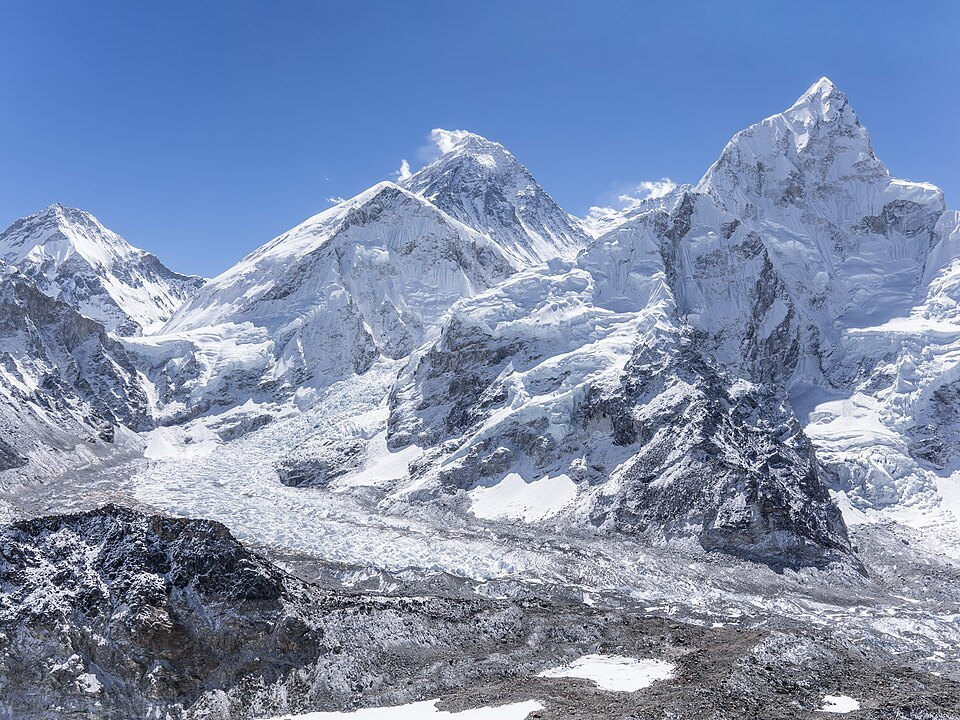
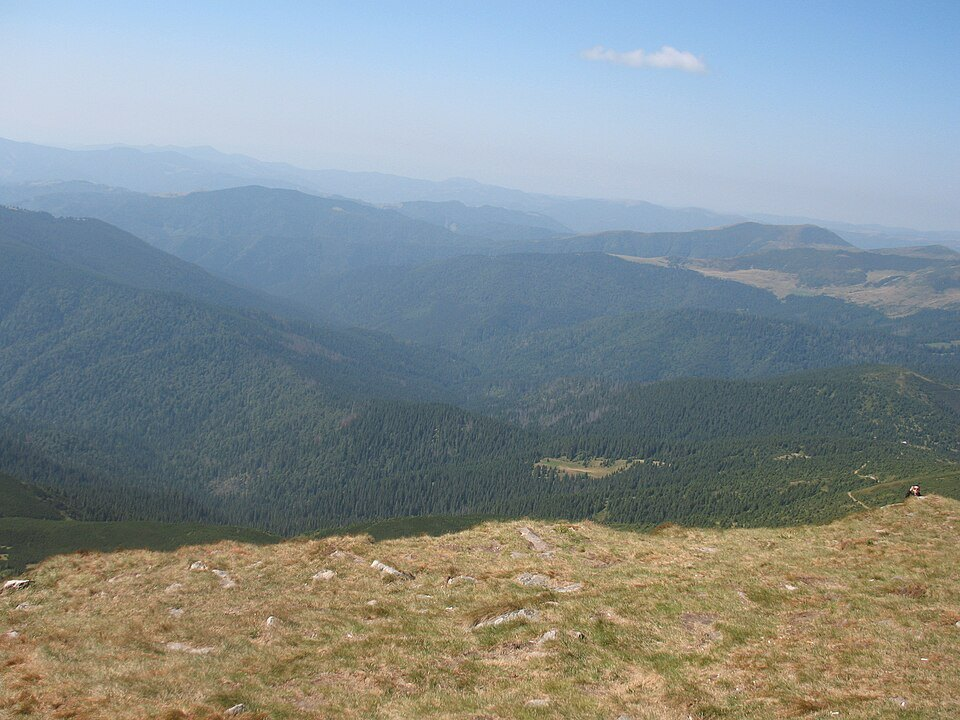
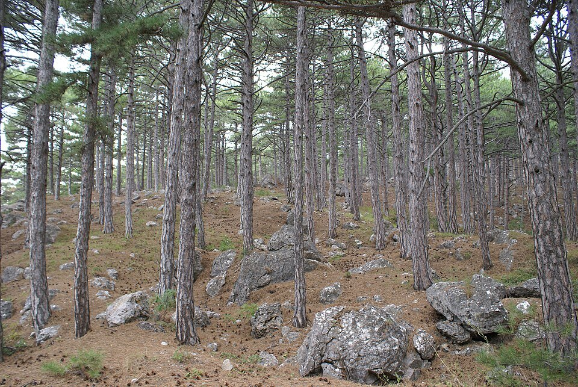
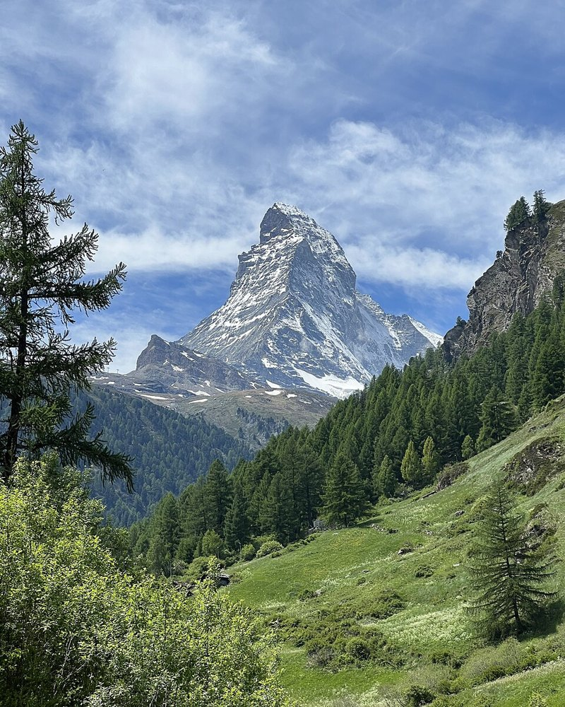
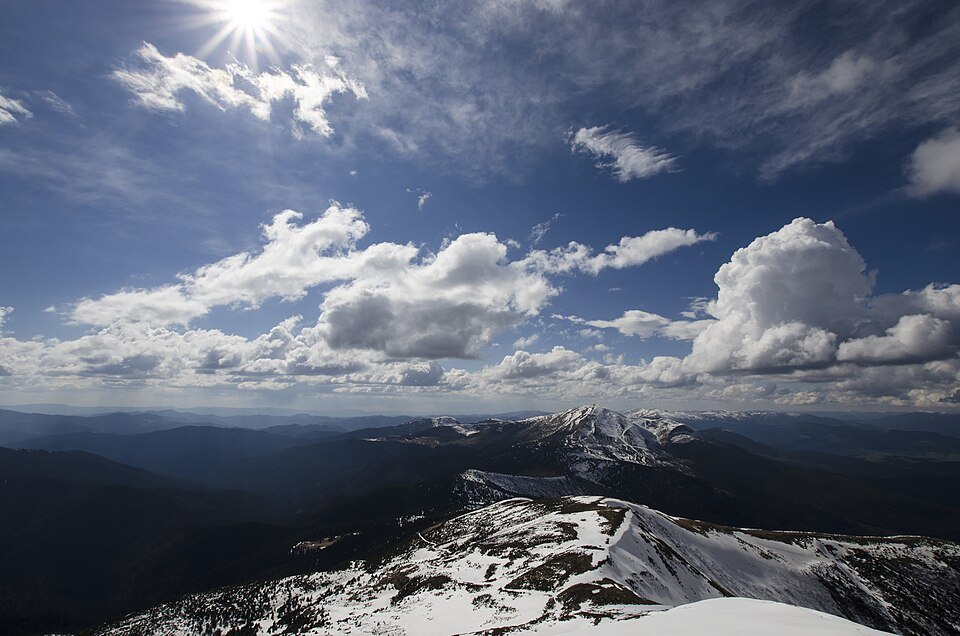
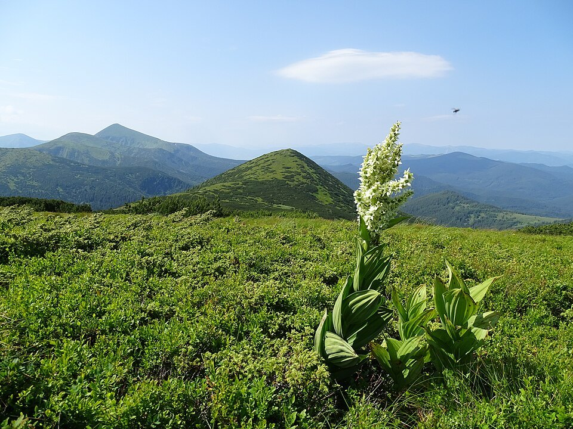
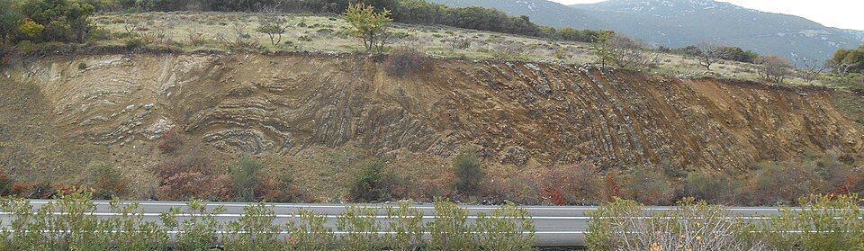
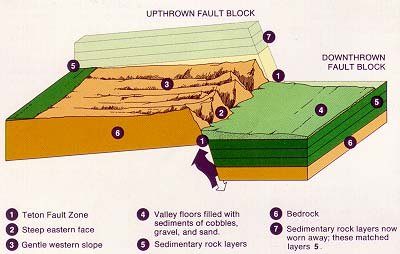
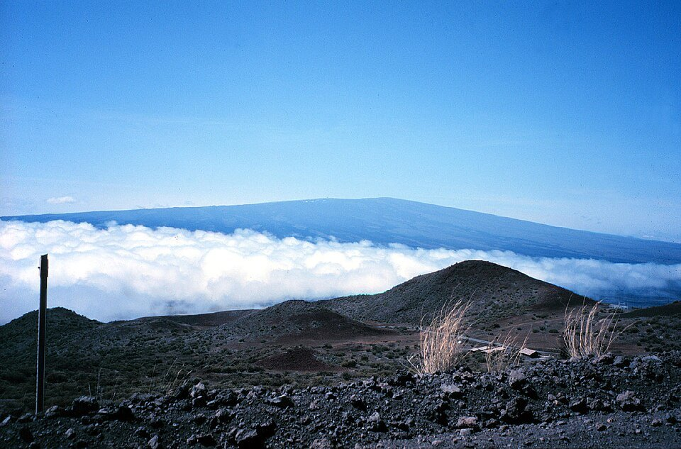

Стисни шари.
Під час зближення літосферних плит шари гірських порід деформуються. Можуть виникати складки, насуви й підняття. Гімалаї сформувалися в зоні зіткнення Індійської та Євразійської плит.
Досліди гірські хребти, перевір закони горотворення, побудуй профіль місцевості й навчися читати гори на карті.
Почати експедицію ↗
Гострі вершини, льодовики, величезні перепади висот.
Matheus Hobold Sovernigo · Wikimedia Commons · CC BY-SA 4.0 · кадрування CSSРельєф — сукупність нерівностей земної поверхні. Гори — значно підняті, розчленовані ділянки із великими відносними перепадами висот. Розглянь фотографії: знайди хребти, круті й пологі схили, долини. Порівняй Гімалаї, Карпати й Кримські гори.
Крок 1. Знайди найвищі точки. Обидві сягають 1800 м.
Крок 2. Подивись на поверхню А: її верхня частина майже рівна. Це високе плоскогір’я.
Крок 3. На поверхні Б вершини чергуються з глибокими зниженнями. Це гірський рельєф.
Правило: висота показує, наскільки місцевість піднята; форма й перепади — який це рельєф.
Максимальна висота лишається 1800 м. Зміни лише глибину долин і подивись, що станеться.
Знайди положення, у якому поверхня стає схожою на гірський хребет. Поясни, яка ознака змінилася, а яка залишилася сталою.

Видовжені хребти та долини між ними.
Aced · Wikimedia Commons · CC BY-SA 3.0 · кадрування CSS
Круті скелясті схили та плоскі ділянки яйли.
Martaom · Wikimedia Commons · CC BY-SA 3.0 · кадрування CSS
Пірамідальна вершина, сформована зокрема льодовиковою ерозією.
CaramelizedOnions · Wikimedia Commons · CC BY-SA 4.0 · кадрування CSS
Сніг підкреслює форму гребенів і схилів.
I.am.wiz · Wikimedia Commons · Ліцензія на сторінці файлу · кадрування CSS
Розчленований рельєф Українських Карпат.
Maxim Gavrilyuk · Wikimedia Commons · Ліцензія на сторінці файлу · кадрування CSSУяви маршрут туриста. Він починається внизу, біля підніжжя, піднімається похилим схилом і доходить до вершини. Кілька вершин, з’єднаних гребенем, утворюють хребет. Щоб перейти через хребет, часто використовують його нижчу ділянку — перевал. Між хребтами лежать гірські долини, де нерідко течуть річки.
Натискай назви, щоб побачити потрібну частину на наступній схемі. Потім вимкни підписи та виконай завдання.
Навчальна схема, не профіль реальної місцевості.
Підпиши пронумеровані частини рельєфу. Обери термін для кожної точки.
Абсолютна висота відлічується від рівня моря. Відносна — різниця між висотами двох точок.
Вершина — 1800 м, підніжжя — 450 м над рівнем моря. Турист підніметься не на 1800 м, а на:
На моделі оранжева лінія показує абсолютну висоту, зелена — відносну. Посунь повзунок підніжжя: абсолютна висота вершини не змінюється, але відносна зменшується.
Знайди відносну висоту за даними моделі: спершу встанови вершину 2000 м та підніжжя 700 м. Перевір, що отримав 1300 м. Тепер виконай наступну задачу без моделі.
Довжина смужок пропорційна абсолютній висоті вершини. Низькі — до 1000 м; середньовисотні — понад 1000 до 2000 м; високі — понад 2000 м.
Наприклад, вершина 1600 м: вона вища за 1000, але не перевищує 2000 м → середньовисотна. Порівнюємо саме абсолютну висоту, а не висоту від підніжжя. Окрема вершина не визначає висоту всієї гірської системи.
Висота Монблану змінюється через сніг та лід; наведено округлений орієнтир, а не незмінне значення.
Земна кора змінюється внаслідок руху літосферних плит, деформацій порід і вулканізму. Вивітрювання та ерозія згодом змінюють гірський рельєф.
Під час зближення літосферних плит шари гірських порід деформуються. Можуть виникати складки, насуви й підняття. Гімалаї сформувалися в зоні зіткнення Індійської та Євразійської плит.
Земна кора розламується; блоки зміщуються один відносно одного. Підняті блоки утворюють гори, а опущені — зниження. Приклад: хребет Тетон у США.
Магма виходить на поверхню. Лава та інші вулканічні продукти накопичуються після вивержень. Так можуть формуватися вулканічні гори, як Мауна-Лоа.
У природі механізми можуть поєднуватися: гори не завжди належать до одного простого типу. Карпати — приклад складчастої гірської системи, яка зазнала складної геологічної історії.
Робота з моделлю: вибери процес → зменш повзунок до 0 → поступово збільш до 100. Спостерігай, що змінюється: форма шарів, положення блоків або висота вулканічної споруди.
Спрощені моделі процесів: рух не показано у справжньому масштабі часу та простору.

Видимі деформації шарів — свідчення тектонічних процесів.
Catherine Christopoulou · Wikimedia Commons · CC BY-SA 4.0 · кадрування CSS
Блок земної кори піднятий уздовж розлому.
NPS · Wikimedia Commons · Public domain · кадрування CSS
Пологі схили щитового вулкана.
GeoDIL, автор у джерелі · Wikimedia Commons · CC0 1.0 · кадрування CSSНа відслоненні видно вигнуті шари. Це ознака деформації порід, а не доказ того, що їх створив вулкан. На іншому фото видно широкі пологі схили Мауна-Лоа: вони характерні для щитового вулкана. Одна лише форма вершини не завжди дозволяє встановити походження гори.
На обох схемах висота змінюється на 100 м між сусідніми горизонталями. На Б та сама зміна відбувається на меншій відстані — тому схил крутіший.

Говерла — 2061 м, найвища вершина України; Роман-Кош — 1545 м, найвища вершина Кримських гір.
Говерла у Google Earth — реальний 3D-рельєф ↗Пересувай точку А–Б по умовному профілю. Порівнюй відстані між горизонталями на двох схилах. Переріз горизонталей — 100 м.
Знайди точку на початку лінії А–Б. Пересувай повзунок до вершини: висота спершу зростає, після вершини знижується. Порівняй, де горизонталі розміщені густіше, і як це видно на профілі. Профіль — це вид рельєфу збоку вздовж обраної лінії.
Схил А: перепад 300 м на 1500 м відстані. Схил Б: 300 м на 500 м. Який крутіший?
Переглянь один відеоурок за потреби повторення або вдома. На уроці можна використати короткий фрагмент замість частини демонстрацій. Випиши дві ознаки гір та один механізм їх утворення, якщо він розглянутий у фрагменті.
Рішельєвський дистанційний · 6 клас · українською
Відкрити на YouTube ↗Географія ПРОСТО · 6 клас · українською
Відкрити на YouTube ↗Внутрішні сили Землі піднімають і деформують земну кору. Зовнішні процеси змінюють її поверхню. Вивітрювання руйнує породи на місці, а ерозія та перенесення водою, льодом і вітром переміщують матеріал. Форма гір залежить не лише від віку, але й від порід, клімату та інтенсивності підняття.
Спочатку встанови 0%. Запам’ятай форму і висоту вершини. Збільш умовну дію ерозії до 100%. Порівняй профілі.
Що відбулося? У цій спрощеній моделі вершини знижуються й округлюються. У природі ерозія може також поглиблювати долини та робити окремі схили крутішими.
Модель не прогнозує висоту реальної гори і не відтворює геологічний час.Умовна гірська територія: вершина 1850 м, підніжжя 650 м. На фото відслонення — складки порід. На карті горизонталі зближені на південному схилі.
§21. Знайди на фізичній карті Гімалаї, Карпати й Кримські гори. Для кожної системи запиши найвищу або характерну вершину, категорію за висотою та один доказ із фізичної карти, що це гірський рельєф. Пройди тест.
Електронні навчальні матеріали ВШО ↗